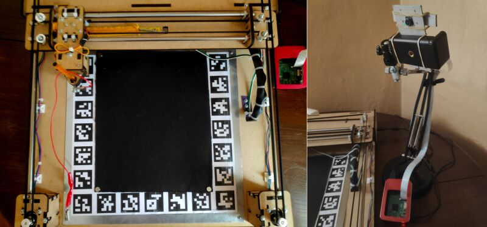

wordblitz-plotter
wordblitz-plotter is a robot that plays Wordblitz automatically.
I was introduced to this mobile version of Boggle a few years ago. Being bad at word games, I first wrote a program that finds the words for me. It worked fine, but I was still too slow at entering the words on my phone. So I built a robot that does just that.
 It consists of a Core-XY plotter that moves a stylus around, and a Raspberry Pi equipped with a camera module for taking pictures of the phone, processing them and sending commands to the plotter
You can find more details about this project and download the plans and source code on GitHub.